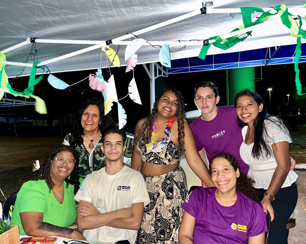
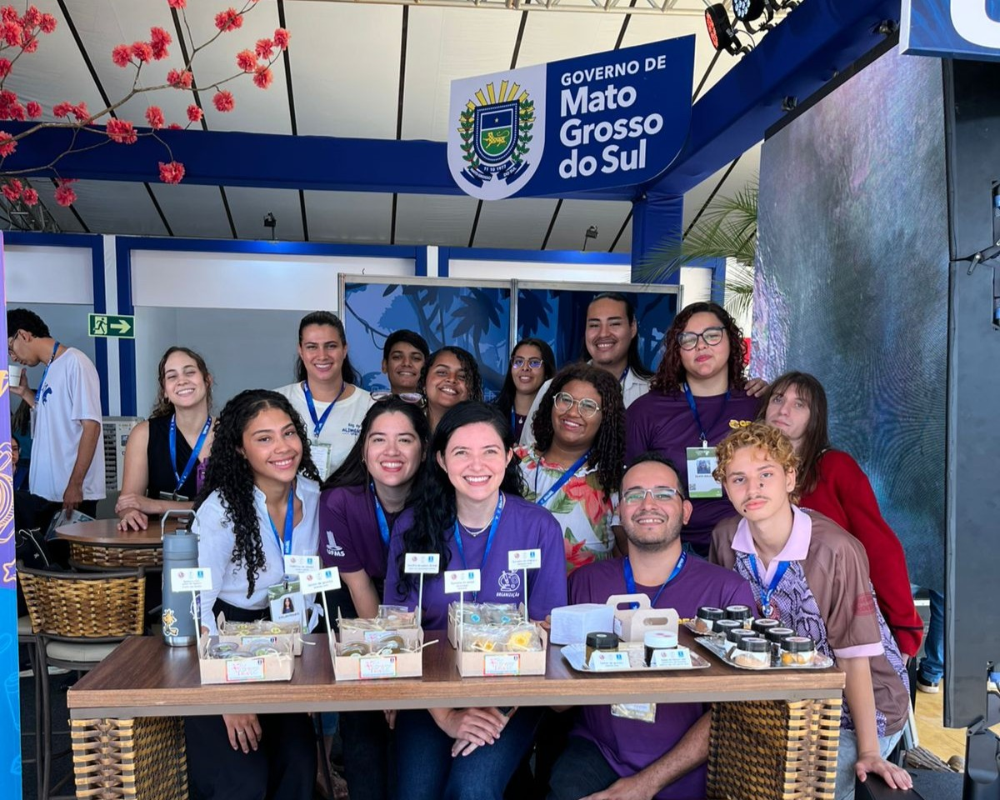
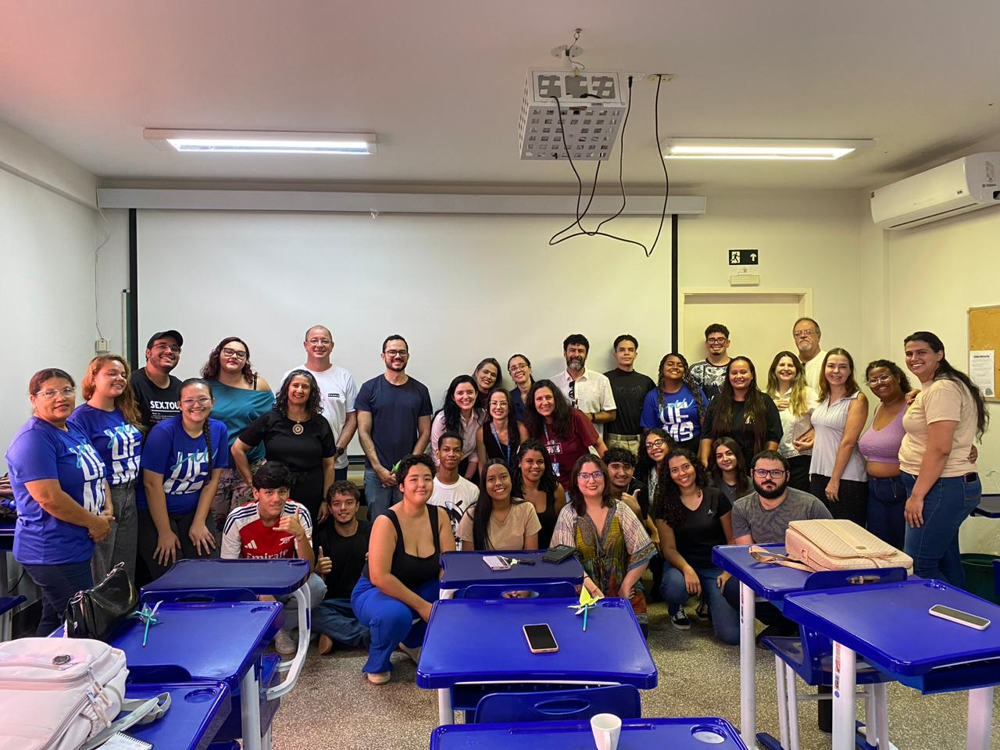

Luau FACFAN 2026
O Luau Facfan 2026 aconteceu no dia 27 de março, das 18h às 22h, em uma noite marcada por integração, entretenimento e forte participação da comunidade acadêmica. A festa foi uma parceria entre os cursos de Engenharia de Alimentos, Nutrição e Farmácia, o evento foi organizado pelo setor de Eventos do Projeto CEA.
Ler mais →
Projeto CEA na COP 15
Entre os dias 23 e 27 de março, o Projeto CEA representou a Engenharia de Alimentos da UFMS na Convenção sobre Espécies Migratórias COP15, contribuindo com a divulgação de produtos desenvolvidos a partir de frutos nativos do Cerrado e do Pantanal. A participação ocorreu no Bosque Expo, espaço oficial sediado no Shopping Bosque dos Ipês, que reuniu delegações, pesquisadores, ONGs e observadores de diversas partes do mundo.
Ler mais →
Semana de Recepção 2026
Entre os dias 02 a 06 de março, o curso de Engenharia de Alimentos realizou uma programação especial de recepção aos novos estudantes da graduação. As atividades foram organizadas pelo Projeto CEA e a coordenação do curso.
Ler mais →